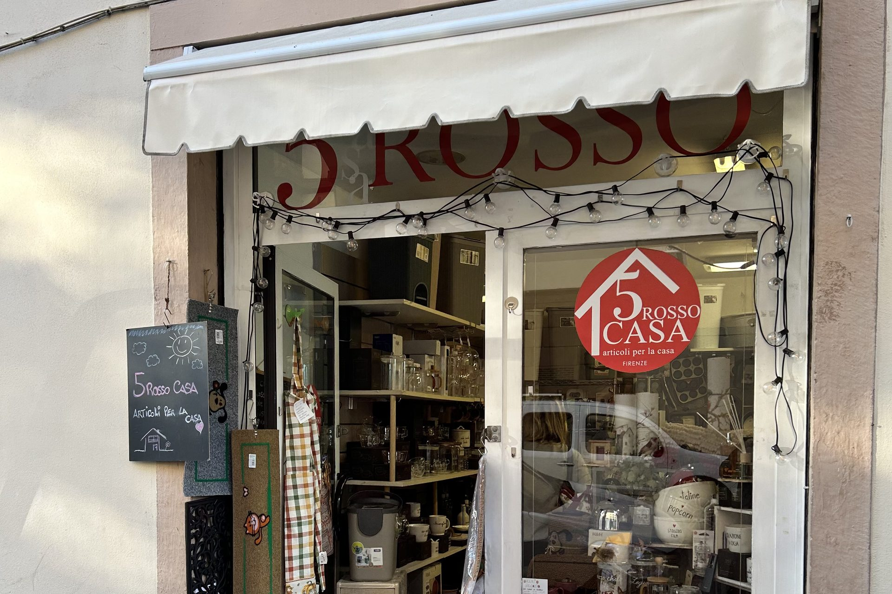
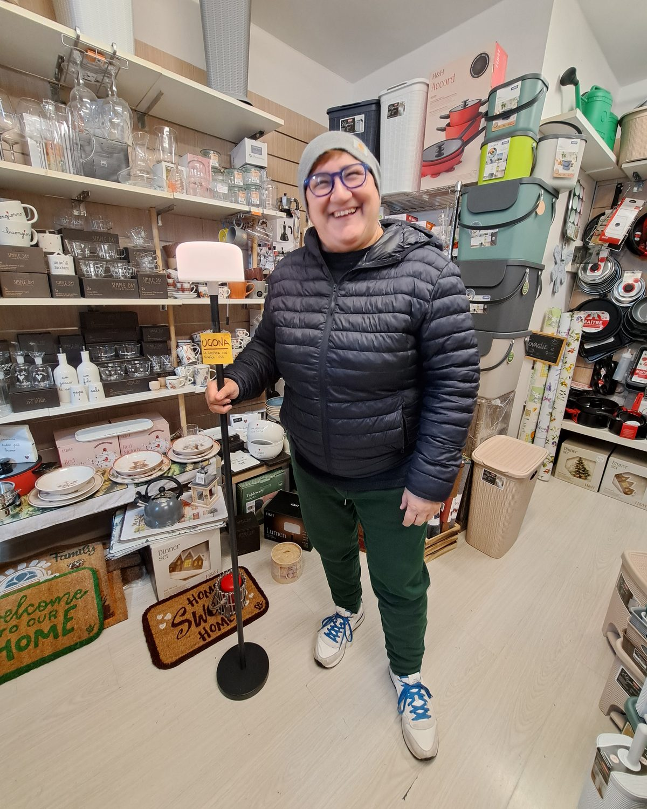
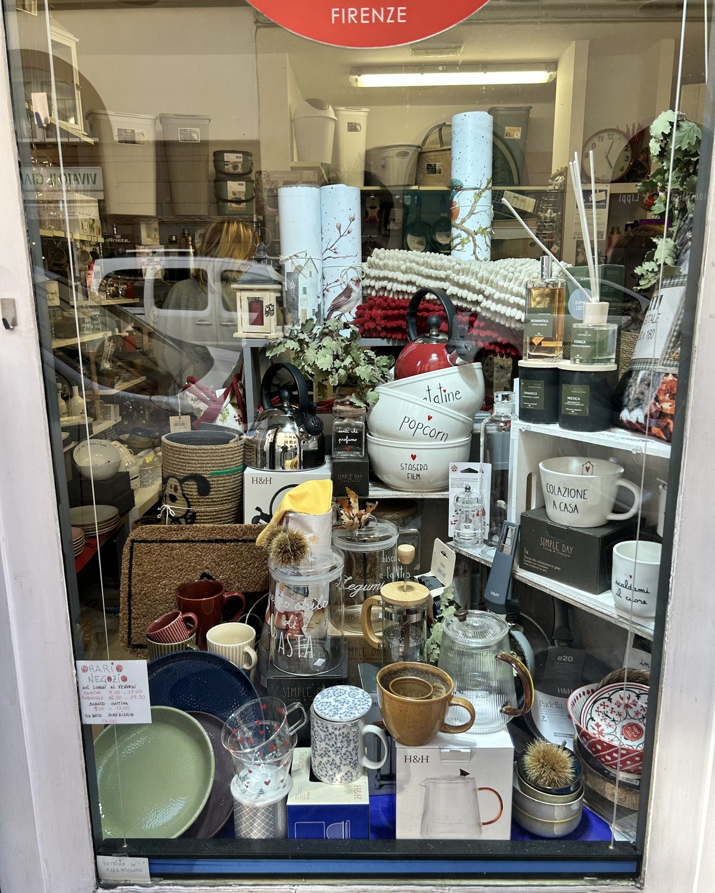

5 Rosso Casaarticoli per la casa · Firenze
Via Agnolo Firenzuola, 5r — 50133 FirenzeLun–ven 9–13 · 16:30–19:30 · sab 9–13

Il cerchio rosso in vetrina: se lo vedi, sei arrivato.
[Testo da approvare] Un negozietto di quartiere, di quelli dove entri per una cosa e ne scopri altre tre. La vetrina cambia con le stagioni; dentro, ogni scaffale ha la sua storia.

Netta tra gli scaffali.
Entra, guarda, chiedi a Netta.
[Testo da approvare] Qui le cose si toccano e si consigliano. Non c'è un catalogo: c'è una persona che conosce quello che vende.

Pentole e bollitori, piatti e bicchieri, barattoli per la dispensa, tessili per la cucina, zerbini per ogni porta, profumi per la casa e qualche idea regalo. [Testo da approvare]

dalla vetrina

presine, lanterne, bollitori

e i sacchetti per portarle a casa
Ceramiche e vetri con frasi scritte a mano.
Pentole, bollitori, borracce.
Via Agnolo Firenzuola, 5r — 50133 Firenze
| Lunedì–venerdì | 9–13 · 16:30–19:30 |
| Sabato | 9–13 |
orari dal cartello in vetrina, da confermare